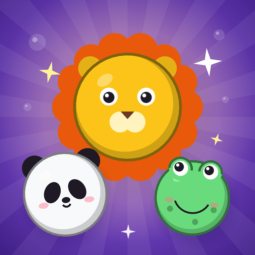
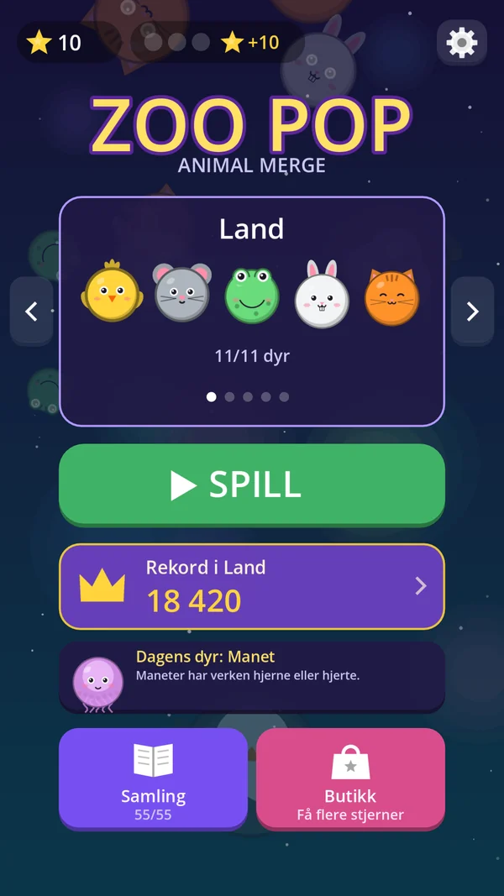
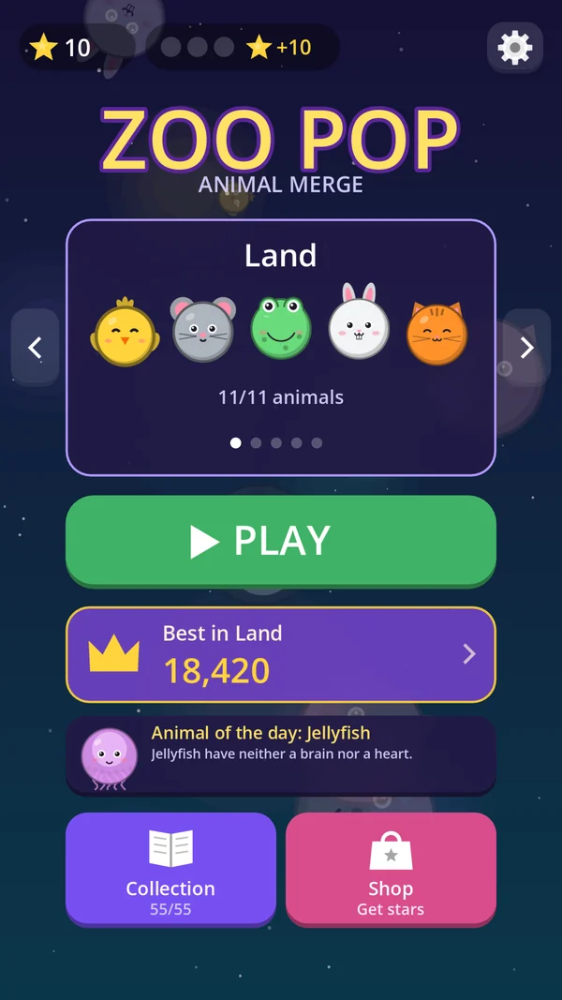
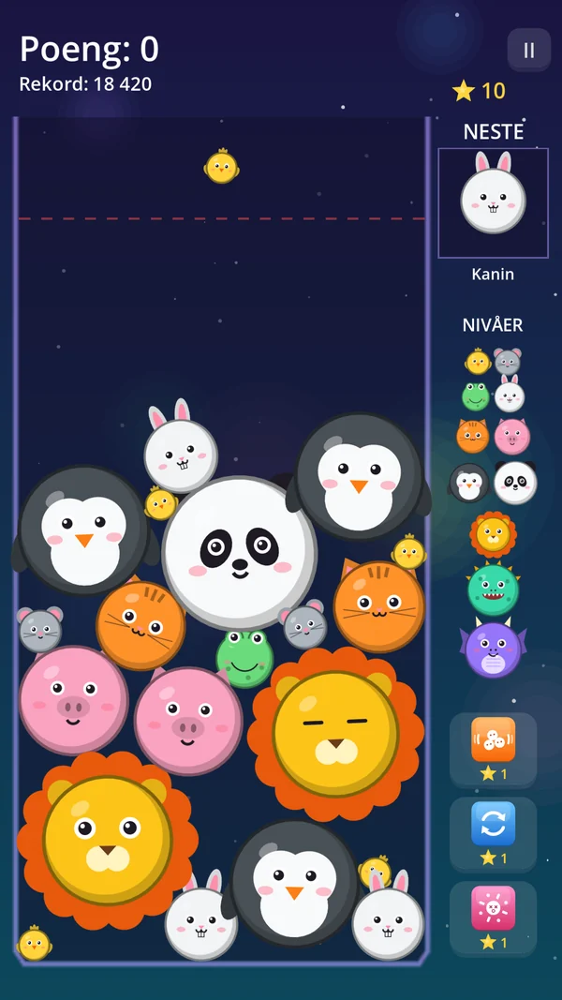
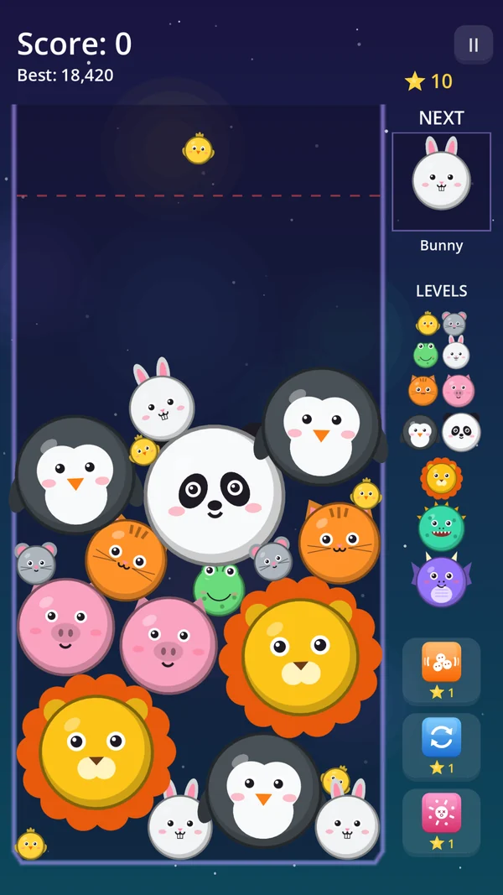
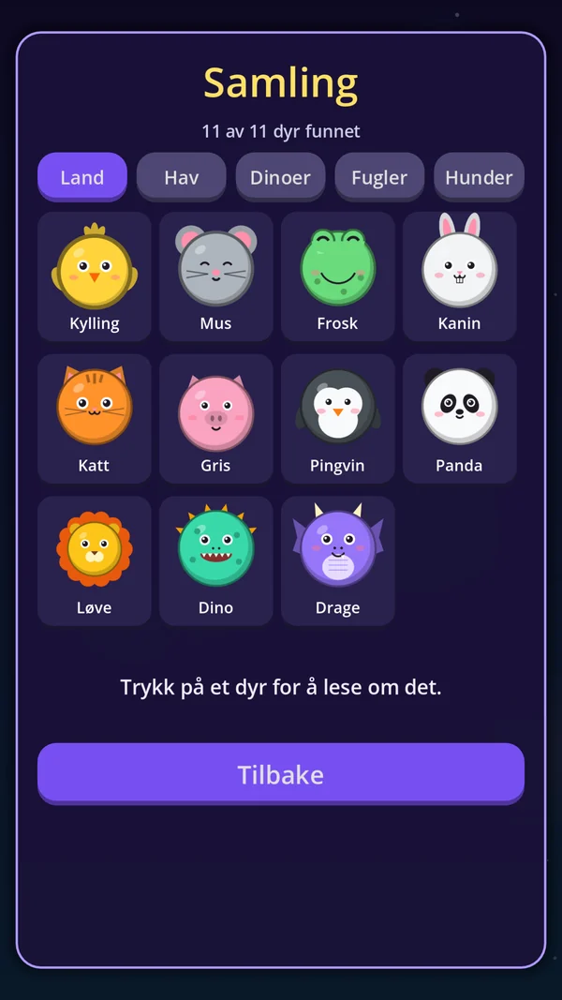
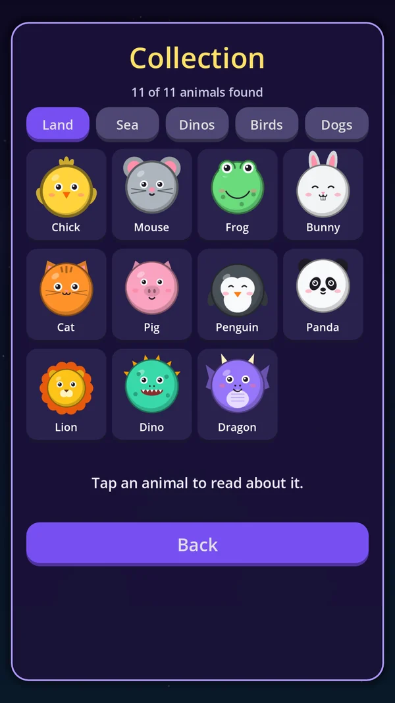

Zoo PopANIMAL MERGE
Slipp dyrene ned i boksen. To like dyr smelter sammen til et større – helt opp til det største dyret av dem alle. Men pass på så boksen ikke blir full!
Drop animals into the box. Two of the same merge into a bigger one – all the way up to the biggest animal of all. Just don't let the box overflow!






55 søte dyr55 cute animals
Fem dyresett: land, hav, dinoer, fugler og hunder. Lag nivå 8 for å låse opp neste sett.
Five animal sets: land, sea, dinos, birds and dogs. Reach level 8 to unlock the next set.
Kombo og hjelpemidlerCombos and power-ups
Slå sammen flere dyr på rad for kombo, og bruk Rist, Bytt eller Fjern ett dyr når det blir trangt.
Chain merges for combos, and use Shake, Swap or Remove one when things get tight.
For hele familienFor the whole family
Ingen konto, ingen innlogging og ingen chat. Reklamen er begrenset til innhold som passer for alle, og kan fjernes med et engangskjøp.
No account, no sign-in and no chat. Ads are limited to content suitable for everyone, and can be removed with a one-time purchase.
Seks språkSix languages
Norsk, engelsk, tysk, polsk, fransk og spansk.
English, Norwegian, German, Polish, French and Spanish.